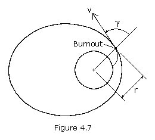

Launch Orbits (Highly Experimental)
This calculator is for calculating your initial orbit when you launch your ship. However it is highly experimental.

The following Values need to be entered:
- The Velocity of the rocket at burnout, meaning how fast your ship goes once you turn off your engine(s)
- The Altitude of the rocket at burnout, meaning how high your ship is once you turn off your engine(s)
- The Velocity Vector of the rocket at burnout, meaning the angle your ship goes once you turn off your engine(s)
Please note that I'm not sure what the Velocity Vector actually is, so this feature, while being correctly implemented,
is pretty much useless at this stage of the KSP development.
The Calculator will return the following Values:
- The Orbital Velocity of the current Orbit, meaning how fast your ship needs to be to orbit in this height
- The Orbital Period of the current Orbit, meaning how much time your ship need to complete one orbit
- The Escape Velocity of the current Orbit, meaning how fast your ship needs to be to escape the gravity of KEarth
If you press the 'Show Orbit' button, a window will open that shows a representation of the orbit around KEarth